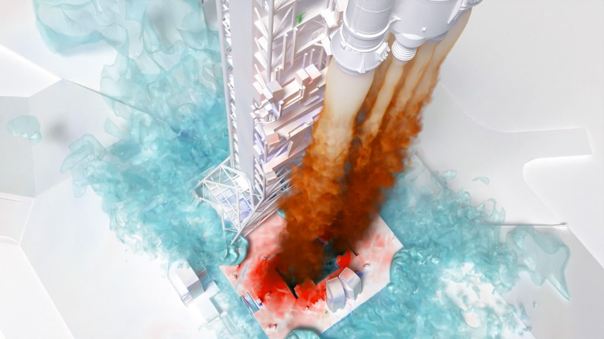
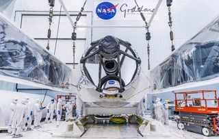
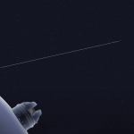
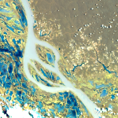
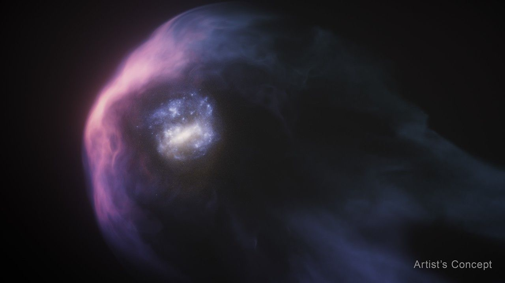
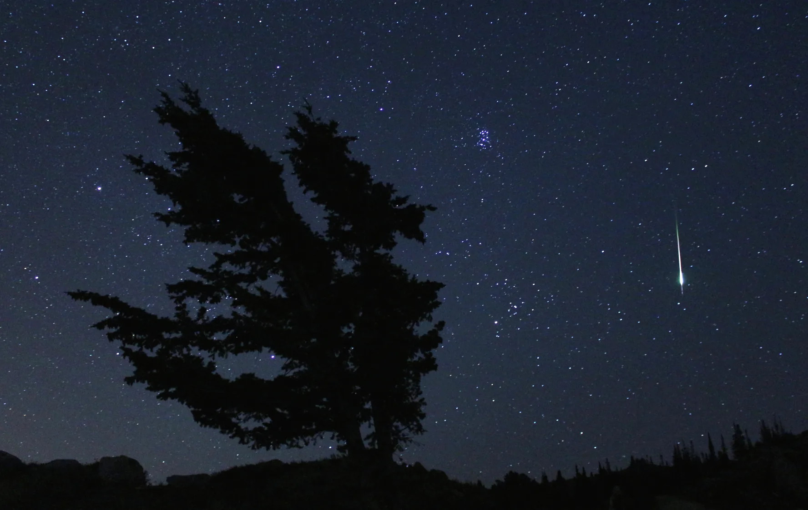
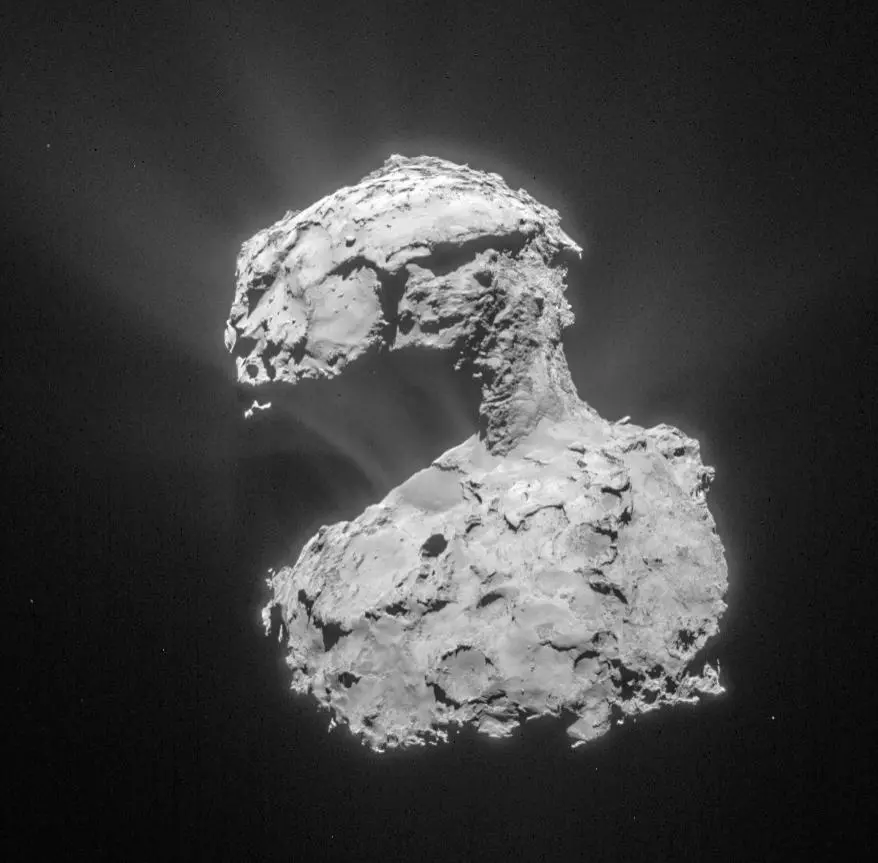
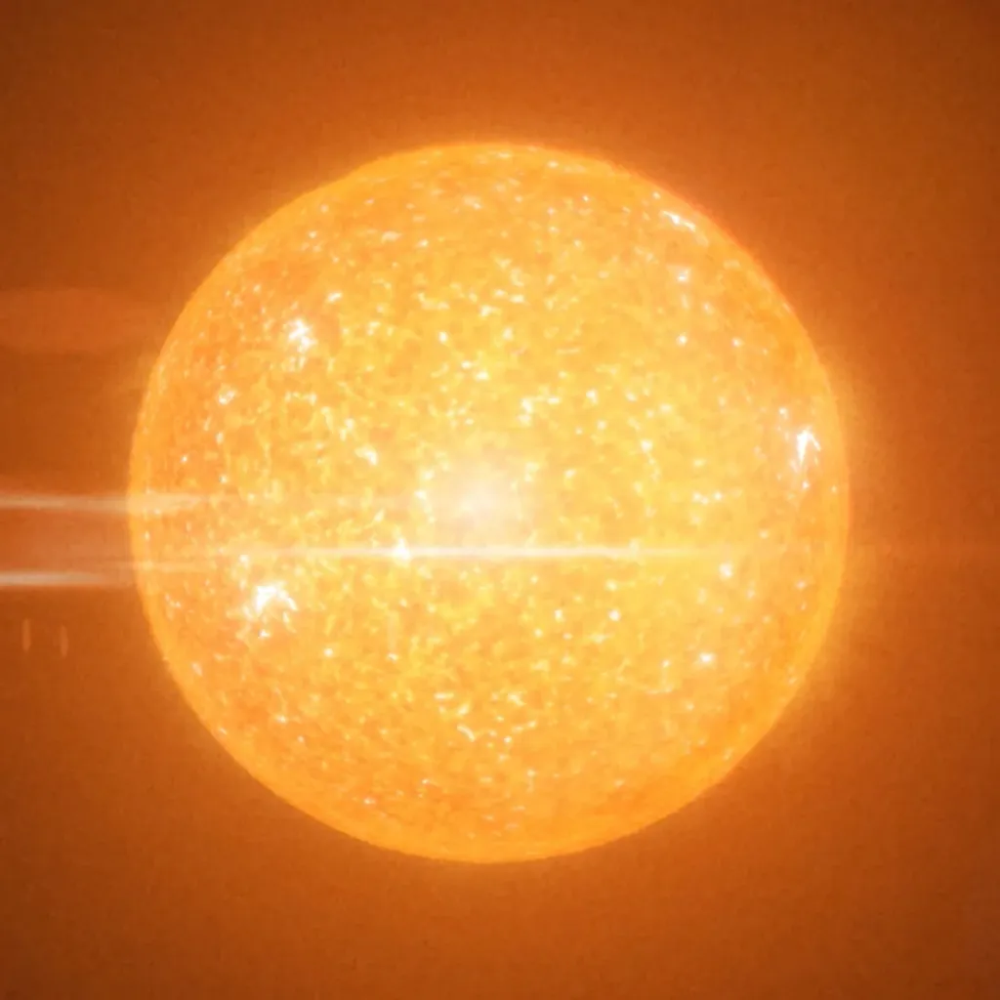
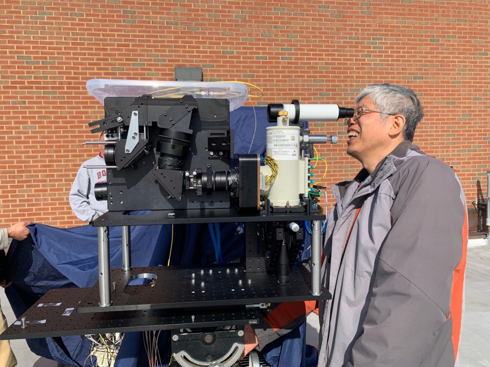
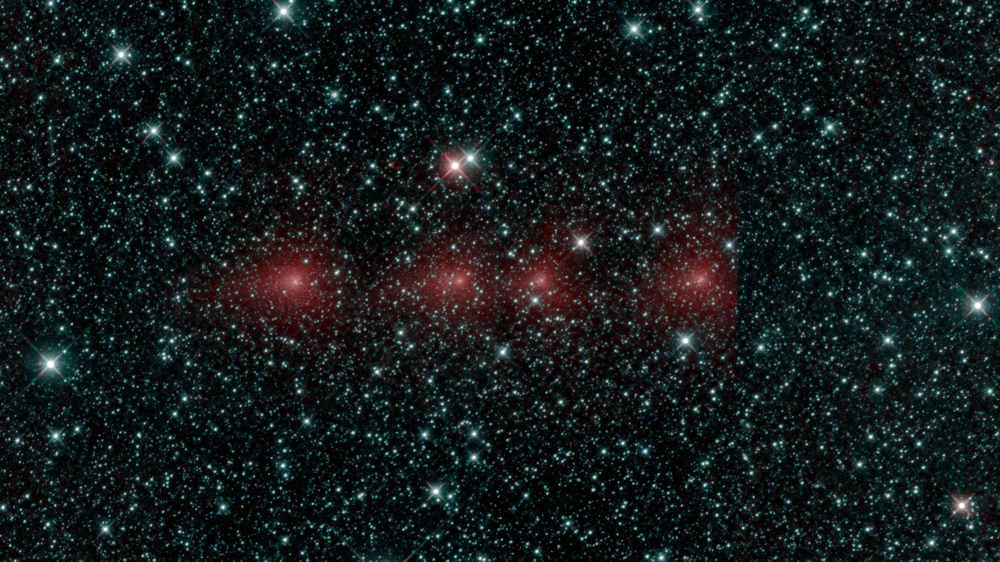

Our alien world
Follow NASA scientists into the field as they explore the most extreme environments on Earth, testing technologies that directly inform NASA missions to detect and discover extraterrestrial life in the universe.
stream on NASA+-
NASA + Series
far out -
NASA + Series
space out -
NASA + Series
other world
-
Articel
Hubble Takes a Look at Tangled Galaxies
2 min read

-

Articel
Six Ways Supercomputing Advances Our Understanding of the universe
7 min read
-

Articel
NASA and Forest Service Use Balloon to Help Firefighters Communicate
5 min read
-

Articel
Precision Pointing Goed the Distance on NASA Experiment
4 min read
-
5 min read
NASA's EMIT Will Explore Diverse Science Questions on Extended Mission
Articel
 -
5 min read
NASA's Hubble Sees Aftermath of Galaxy's Scrape with Milky Way
Articel
 -
5 min read
What's Up: November 2024 Skywatching Tips from NASA
Articel
 -
5 min read
NASA-Led Team Links Comet Water to Earth’s Oceans
Articel

Global Freshwater Decrease
An international team of scientists using observations from NASA-german satellites found evidance that Earth's total amount of freshwater dropped abruptly in May 2014 and has remaind low ever since.
learn MoreThe Solar System
discover More- Sun 
- Kuiper Belt 
- Oort Cloud 
-
Universe